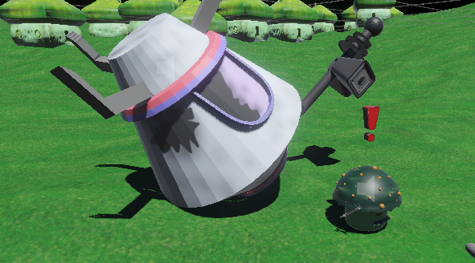
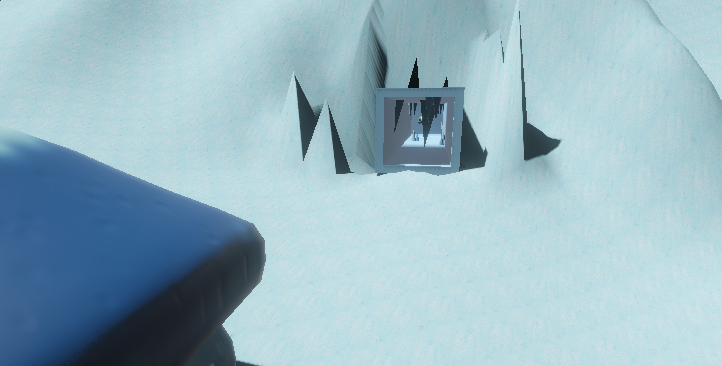
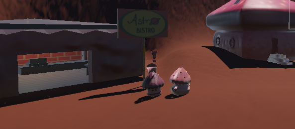
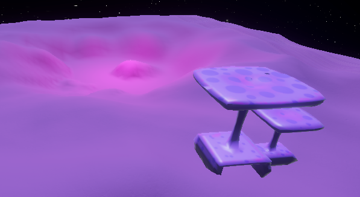

STARSHIP SALVAGE




An astronaut crash lands on an alien planet, Cora Lumen, on a very special day. You must complete quests to fix your ship and befriend the aliens on the way. This was a group project, in which I was in charge of the dialogue, quest system and many of the 3D models. [2025 Unity]